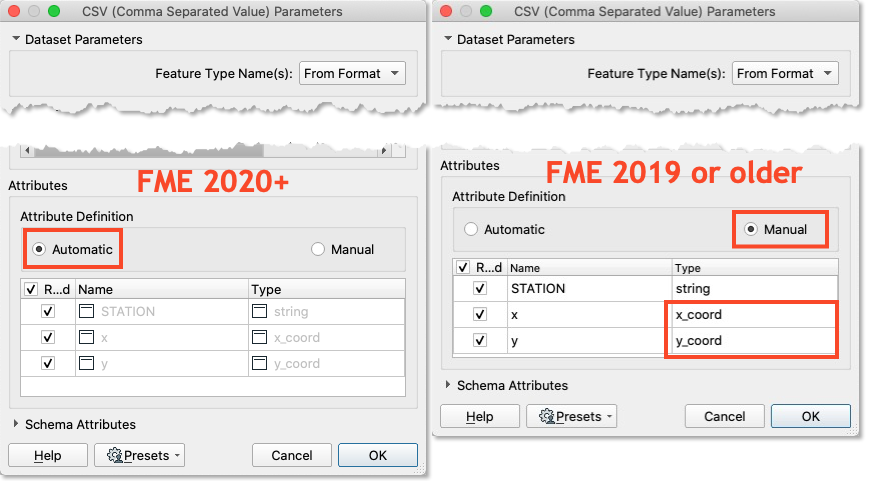

Learning Objectives
After completing this lesson, you'll be able to:
- Identify if a reader will automatically convert attributes to points.
- Configure a reader to convert attributes to points.
Video
Resources
Introduction
Using the reader parameters to create point geometry works well if you are working with spatial data from the start. As of FME 2020, this method occurs automatically in certain readers (e.g., CSV and Excel) as long as the attributes are named correctly, such as latitude, longitude, and elevation, or x, y, and z. It is still possible to use this method in older versions of FME, or if your attribute names are different, it just requires a manual step.
Exercise
- Open FME Workbench 2022.0. Click Blank Workspace to start a new workspace. Click Readers > Add Reader and set Format to CSV (Comma-Separated Value). Click the ellipsis button [...] and select the downloaded rapid_transit_stations.csv file or paste in the URL.
- Set the Coord. System to UTM83-10. Then click the Parameters button. If you are using FME 2020 or newer, confirm that the Attribute Definition has x and y, set to x_coordinate and y_coordinate, respectively. If you are using an older version of FME or it is not automatically set, switch the Attribute Definition to Manual, then change the X/Y/Z (Longitude/Latitude/Elevation) fields to the x/y/z_coordinate(_coord) data type, click OK until the reader is added to the canvas.
- Run the workspace and view the results in Visual Preview.
Results

The output of point features using any of the three methods. Stylized in FME Data Inspector using map tiles by Stamen Design, under CC-BY-3.0. Data by OpenStreetMap, under CC-BY-SA.